<!DOCTYPE html>
<html>
<head>
<meta charset="utf-8" />
<link rel="stylesheet" href="https://unpkg.com/leaflet@1.3.4/dist/leaflet.css"/>
<script src="https://unpkg.com/leaflet@1.3.4/dist/leaflet.js"></script>
<style type="text/css">
#map{float: center}
</style>
</head>
<body>
<div id="map" style="width: 1000px; height: 600px"></div>
<script>
var map = L.map('map').setView([23.736571, 121.0657029], 7.5);
L.tileLayer('https://{s}.tile.openstreetmap.org/{z}/{x}/{y}.png', {
    attribution: '&copy; <a href="https://www.openstreetmap.org/copyright">OpenStreetMap</a> contributors'
}).addTo(map);
//北部
var marker = L.marker([25.0377,121.5149]).addTo(map);//台北
marker.bindPopup('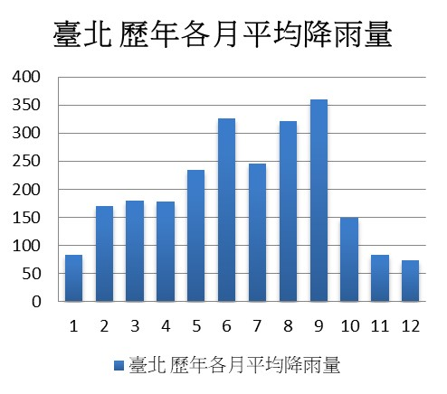').openPopup();
var marker = L.marker([25.1333,121.7405]).addTo(map);//基隆
marker.bindPopup('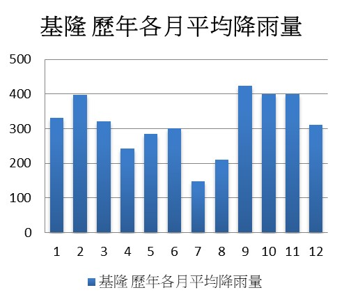').openPopup();
var marker = L.marker([25.0067,121.0475]).addTo(map);//桃園
marker.bindPopup('目前無此測站之資料').openPopup();
var marker = L.marker([25.1649,121.4489]).addTo(map);//新北
marker.bindPopup('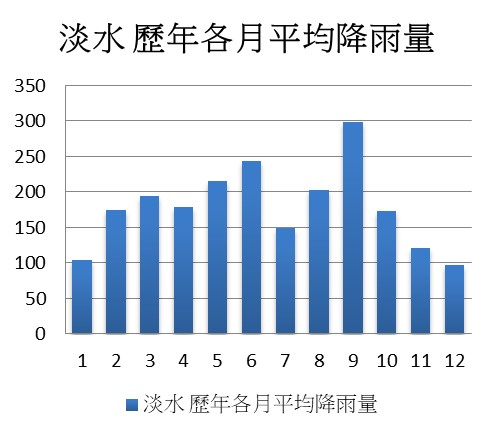').openPopup();
var marker = L.marker([24.7987,120.9869]).addTo(map);//新竹
marker.bindPopup('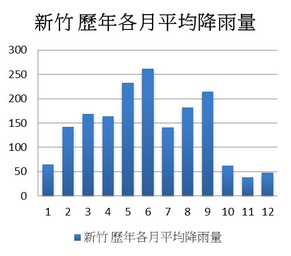').openPopup();
var marker = L.marker([24.7640,121.7565]).addTo(map);//宜蘭
marker.bindPopup('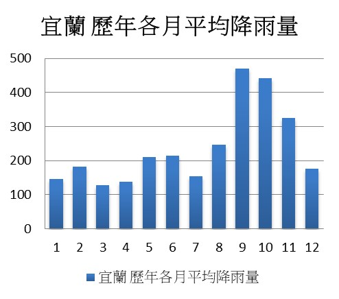').openPopup();
//中部
var marker = L.marker([23.4959,120.4329]).addTo(map);//嘉義
marker.bindPopup('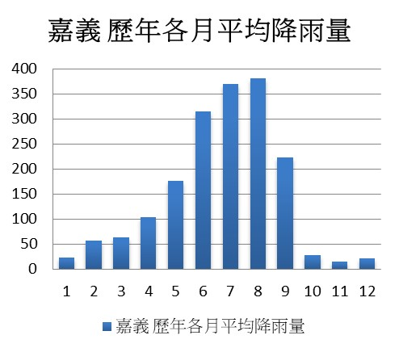').openPopup();
var marker = L.marker([24.1457,120.6841]).addTo(map);//台中
marker.bindPopup('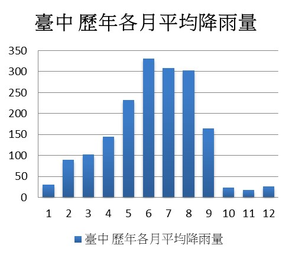').openPopup();
var marker = L.marker([23.8813,120.9081]).addTo(map);//南投
marker.bindPopup('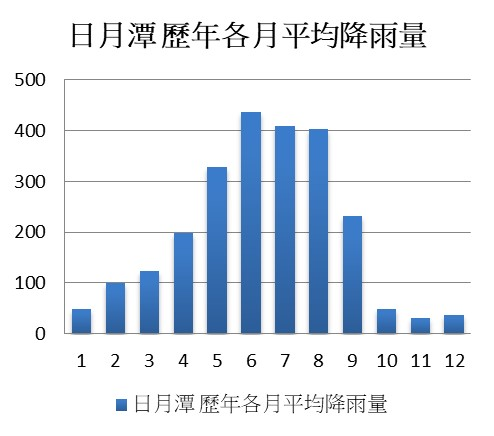').openPopup();
var marker = L.marker([23.4876,120.9595]).addTo(map);//南投玉山
marker.bindPopup('').openPopup();
var marker = L.marker([24.5646,120.8246]).addTo(map);//苗栗
marker.bindPopup('目前無此測站之資料').openPopup();
var marker = L.marker([23.8752,120.5746]).addTo(map);//彰化
marker.bindPopup('目前無此測站之資料').openPopup();
var marker = L.marker([23.7375,120.4179]).addTo(map);//雲林
marker.bindPopup('目前無此測站之資料').openPopup();
//南部
var marker = L.marker([22.9932,120.2048]).addTo(map);//台南
marker.bindPopup('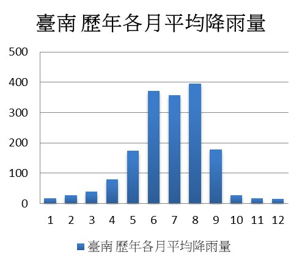').openPopup();
var marker = L.marker([23.5655,119.5631]).addTo(map);//澎湖
marker.bindPopup('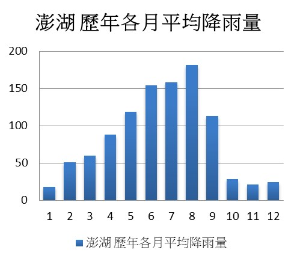').openPopup();
var marker = L.marker([22.5660,120.3157]).addTo(map);//高雄
marker.bindPopup('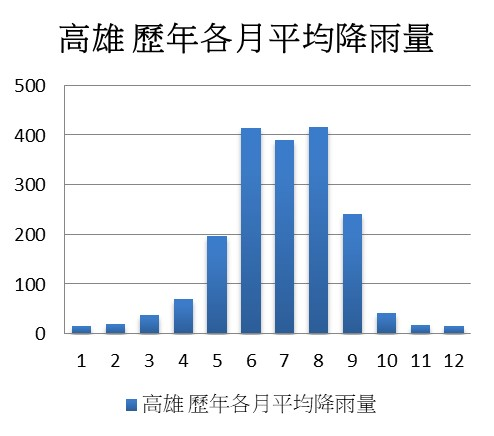').openPopup();
var marker = L.marker([22.0039,120.7463]).addTo(map);//屏東
marker.bindPopup('').openPopup();
//東部
var marker = L.marker([22.7522,121.1546]).addTo(map);//台東
marker.bindPopup('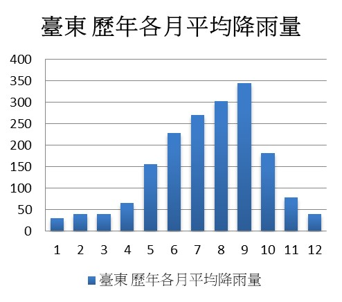').openPopup();
var marker = L.marker([22.3557,120.9038]).addTo(map);//台東大武
marker.bindPopup('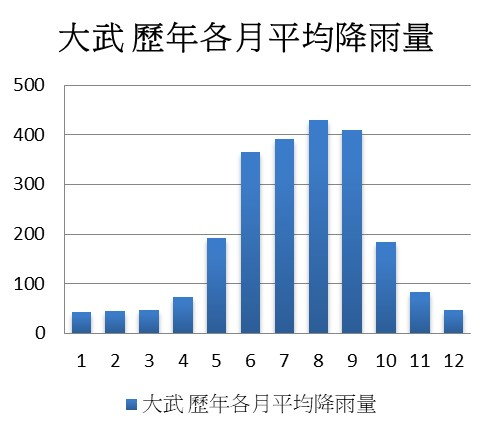').openPopup();
var marker = L.marker([23.0975,121.3734]).addTo(map);//台東成功
marker.bindPopup('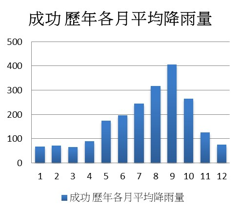').openPopup();
var marker = L.marker([22.0370,121.5583]).addTo(map);//台東蘭嶼
marker.bindPopup('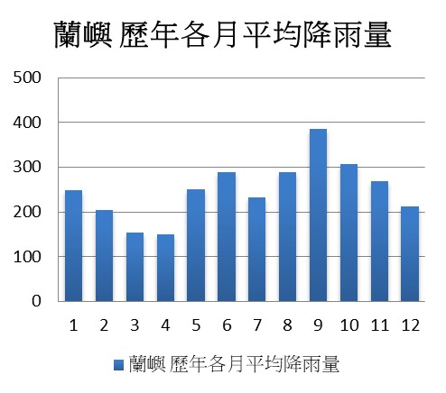').openPopup();
var marker = L.marker([23.9751,121.6133]).addTo(map);//花蓮
marker.bindPopup('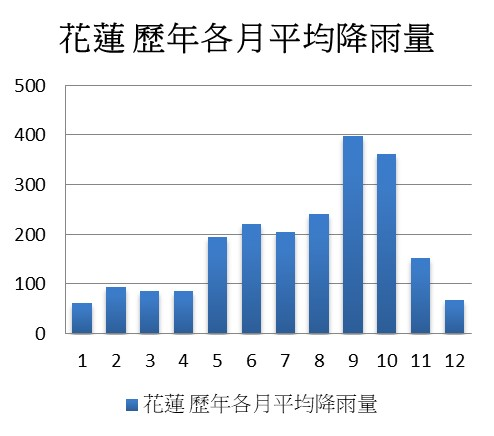').openPopup();
//離島
var marker = L.marker([26.1693,119.9234]).addTo(map);//馬祖
marker.bindPopup('目前無此測站之資料').openPopup();
var marker = L.marker([24.4073,118.2893]).addTo(map);//金門
marker.bindPopup('目前無此測站之資料').openPopup();

</script>

<script>
	function imagePopup(){document.write("")}
</script>
</body>
</html>